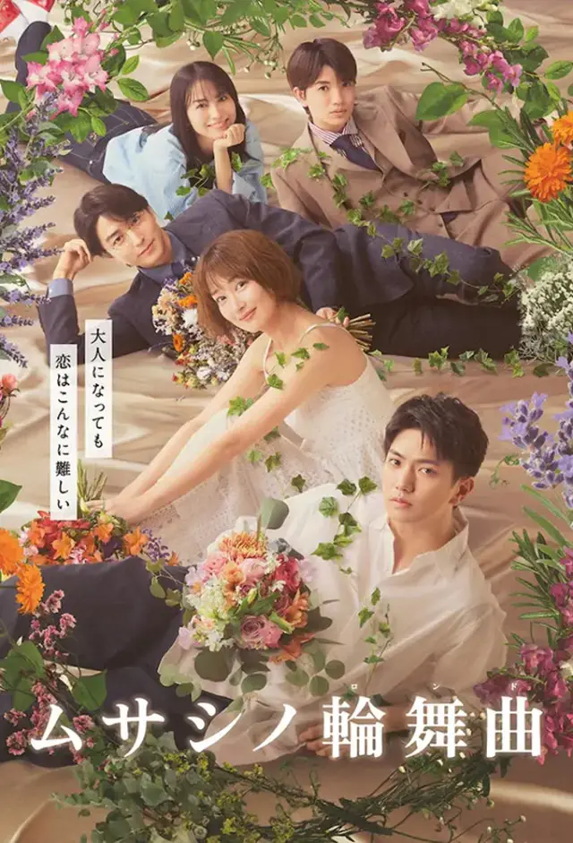

Musashino Rondo
- Native Title: ムサシノロンド
- Genre: Romance
- Episodes: #
- TV: TV Asahi
- Air Dates: April 19, 2025 —
- Season Year: Spring 2025
- Director: Motohashi Keita
- Screenwriter: Shimizu Yukako, Wakasugi Kanna
- Producer: Miwa Yumiko
- Composer: Shinoda Daisuke
- Official Site
Synopsis
Agawa Ryuhei has been in love with Musashibara Tamaki, a woman 10 years older than him, since he was a child. He confessed to her twice but she turned him down. As 10 years pass without his feelings being reciprocated, Ryuhei feels dejected and begins moving away from his feelings for her. However, when she falls in love at first sight her brother’s colleague and Ryuhei is made aware of a love rival, his passion is reignited and he begins an aggressive approach to gain her love.
Source
Basic panel example yang nanti akan tampil
| Cast | ||||
|---|---|---|---|---|
 |
 |
 |
 |
 |
| Keiko Kitagawa | Nao Omori | Sawa Nimura | Yuna Taira | Ryohei Abe |
| Hiromi Nakagoshi | Asahi Yuki | Sawa Azuma | Ririko Yuki | Takeshi Kumura |
 |
|
|
|
 |
| Keiko Kitagawa | Nao Omori | Sawa Nimura | Yuna Taira | Ryohei Abe |
| Hiromi Nakagoshi | Asahi Yuki | Sawa Azuma | Ririko Yuki | Takeshi Kumura |